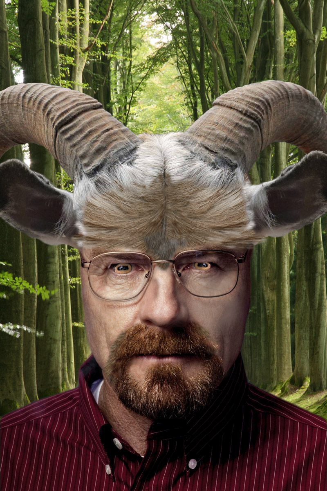

I s a b e l l a T o g n i n i
Satyr
For this assignment we had to make an animal-human hybrid. I chose to combine Bryan Cranston and a billy goat. I used one image for the head of the goat, another for the eyes, and the clone stamp tool to copy portions of the fur around his face.
